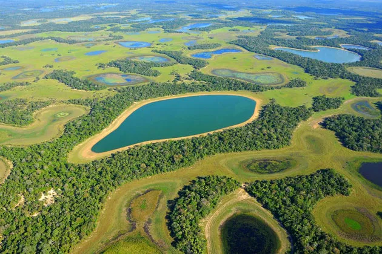
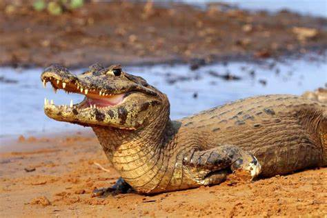
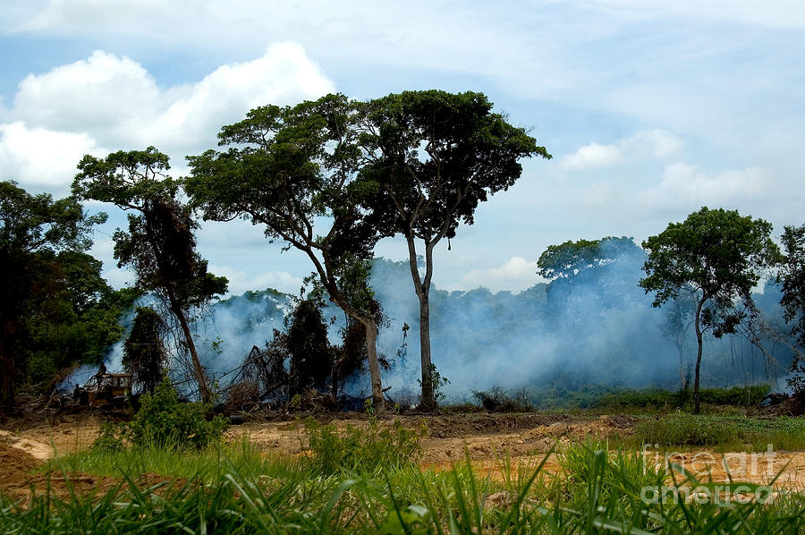

Pantanal

O Pantanal é um dos menores biomas existentes no Brasil. Sua localização está na região Centro-Oeste, nos
estados do Mato Grosso (no sul do estado) e do Mato Grosso do Sul (no noroeste do estado), além de poder ser
encontrado no Paraguai e na Bolívia. É um bioma extremamente rico quando o assunto é fauna brasileira, pois
abriga grande parte dos animais
existentes no Brasil. Sua preservação ambiental é alta, sendo considerado o bioma mais preservado do país de
acordo com os órgãos governamentais, como o Instituto Brasileiro de Geografia e Estatística.
Características do Pantanal
O Pantanal apresenta grande integração de outros biomas, podendo ter áreas de ocorrência com o Cerrado,
a Caatinga, e florestas tropicais. Entretanto, a principal característica desse bioma é sua planície
inundada,
sua marca registrada no Brasil.
Localização do Pantanal
Esse bioma pode ser encontrado em 22 cidades brasileiras, nos estados do Mato Grosso e Mato Grosso do
Sul. Sua
área de ocorrência limita-se ao oeste desses estados, nas fronteiras com o Paraguai e a Bolívia. Com
isso, o
Pantanal também pode ser encontrado nesses dois países.
A área que abrange esse bioma chega a 220 mil km², sendo 120 mil km² em solo brasileiro. No Brasil, a
área
pantaneira ocupa, aproximadamente, 2% do território do país. É o menor bioma brasileiro.
Solo do Pantanal
Grande parte dos solos pantaneiros é de planície inundável, característica natural da região. Isso é uma
dádiva, mas, ao mesmo tempo, é prejudicial
do ponto de vista agrícola, pois, com essa inundação, muitas áreas possuem baixa fertilidade, o que leva
ao uso
de agrotóxicos e insumos químicos, os agroquímicos, para o cultivo de soja e afins.
A inundação faz com que a matéria orgânica decomponha-se de forma lenta, por isso é um solo pouco
fértil.
Esse solo é oriundo de processos erosivos das terras mais altas, os planaltos do Pantanal, comuns nas
áreas mais
ao leste do bioma. Nessas áreas, o terreno é arenoso e ácido, também com baixa fertilidade.
Vegetação do Pantanal
Por ser um bioma com ligações próximas à Floresta Amazônica e ao Cerrado, a paisagem pantaneira é bem
diversificada, com árvores de médio e grande porte, típicas da Amazônia, mas também conta com a presença
de árvores tortuosas de baixo e médio porte, muito comuns no Cerrado. Nas matas ciliares, próximas dos
rios,
é comum encontrarmos jenipapos de 20 metros de altura, árvore amazônica. Nessa área, a vegetação é densa
e
exuberante, com figueiras, ingazeiros, e outras árvores altas. As planícies inundadas do Pantanal
possuem uma
vegetação típica dessa localidade, como os vegetais aquáticos:
aguapé, erva-de-santa-luzia, utriculária e cabomba, muitos deles utilizados para fins
medicinais.
Nas áreas não tão alagadas, a presença de árvores do Cerrado é frequente, como os ipês e buritis.
Clima do Pantanal
O Pantanal está localizado em uma área de ocorrência do clima tropical, com duas estações bem
definidas: o verão chuvoso e o inverno seco. Esse fato é essencial para a atividade turística da
região, uma das grandes impulsionadoras da economia. As chuvas concentram-se de outubro a março,
período em que o turismo é limitado e a pesca é proibida entre novembro e fevereiro, pois coincide
com a reprodução dos peixes. Nessa época, a temperatura ultrapassa os 30 ºC.
Entre abril e setembro, a ausência de chuvas é marcada por belíssimas paisagens que atraem turistas de
todos os cantos, tanto brasileiros quanto estrangeiros. A temperatura amena, entre os 20 ºC e 25 ºC,
contribuipara as atividades econômicas locais, como passeio de barco, comércio e práticas agropecuárias.
Relevo do Pantanal
O Pantanal está situado em uma área circundada por planaltos que atingem, em média, 700 metros de altitude.
Essa elevação ao redor do bioma é a responsável pelas nascentes dos vários rios pantaneiros. Entretanto, o
Pantanal propriamente dito possui altitudes que não ultrapassam 120 metros. Com isso, mais de 80% do bioma
ficam alagados no verão, época de intensas chuvas.
Dos planaltos ao redor, o mais famoso é o maciço Urucum, no Mato Grosso do Sul, com um pico culminante
de 1065 metros de altitude. Nessa unidade de relevo, encontramos uma das maiores reservas de manganês do
Brasil, mineral bastante utilizado em indústrias siderúrgicas.
Hidrografia do Pantanal
A água no Pantanal é um fator decisivo no equilíbrio da fauna e da flora. Durante as cheias no verão,
estima-se que 180 milhões de litros d’água atinjam a planície do bioma.
Toda essa água acumula-se na planície, formando as áreas inundadas: pântanos, brejos, lagoas e baías que
se
interligam aos rios. O relevo contribui para essa ligação devido a sua baixa declividade.
Dentre os inúmeros rios da região, podemos destacar o rio Cuiabá, rio Taquari, rio Itiquira, rio
Aquidauana,
além do rio Paraguai, um dos maiores da localidade.
Fauna do Pantanal

A fauna presente no Pantanal é riquíssima, concentrando quase todos os animais que vivem no Brasil. Esse
fato ocorre porque tal bioma sofre uma influência direta de três grandes biomas brasileiros: Floresta
Amazônica, Cerrado e Mata Atlântica, além de ter algumas áreas com resquícios da Caatinga. De acordo
com a Agência de Notícias do IBGE, o Pantanal contém:
132 espécies de mamíferos: anta, capivara, veado, onça-pintada, morcego;
85 espécies de répteis, sendo os jacarés com a maior variedade;
463 espécies de aves: tucano, arara, tuiuiú, carão;
35 espécies de anfíbios, como a rã verde;
263 espécies de peixes: pacu, pintado, bagre, traíra, dourado, piau, jaú (o maior da região).
Com toda essa riqueza, o Pantanal sofre com a caça e a pesca que ocorrem de forma ilegal. Um dos grandes
alvos
dos caçadores é o jacaré, animal bastante comum nessa região. Além disso, o peixe-dourado também está na
lista
de animais ameaçados pelos pescadores, o que
levou à proibição da sua pesca. No entanto, mesmo com o rigor da lei, falta fiscalização, levando a
ataques
ilegais constantes.
Aspectos econômicos do Pantanal
A economia pantaneira gira em torno das atividades pesqueiras e do turismo. Entretanto, recentemente foi
incluída nas atividades da região a pecuária bovina, principalmente no estado do Mato Grosso.
Nas cidades de Cáceres (MT) e Corumbá (MS), existem pousadas que abrigam turistas durante a alta
temporada, que
vai de junho a setembro. Essas pousadas são chamadas de barcos-hotéis, pois muitos moradores da região
transformam seus barcos em hotéis e viram guias para pescadores de todos os cantos do Brasil e também de
outros
países. Durante os meses de novembro a fevereiro, a pesca nas áreas pantaneiras é proibida, pois é o
período
da piracema, época em que os peixes migram e
reproduzem-se.
A pecuária atrai muitos fazendeiros mato-grossenses que utilizam as áreas planas da região para criar
seus
gados. Além disso, a boa umidade do local garante bastante comida para os animais. Para atravessar as
áreas
alagadas, grande parte dos criadores de gado causa ferimento em um boi. Este, ao sangrar, atrai as
piranhas,
bastante comuns em alguns rios. Com isso, a atenção desses peixes volta-se para esse boi, fazendo com
que o
restante do rebanho atravesse em segurança.
A criação de gado consegue desenvolver-se de forma sustentável, gerando emprego e renda. Entretanto, nas
últimas
décadas, o cultivo da soja no Mato Grosso adentrou o Pantanal, o que pode ser um ato perigoso, pois esse
cultivo
usa uma quantidade expressiva de agrotóxicos, gerando problemas para todo o ecossistema pantaneiro.
No turismo, é bastante comum o passeio de
chalana, uma grande embarcação de fundo plano, típica dessa região e usada para transporte de pessoas
pelos rios
do Pantanal.
Impactos ambientais no Pantanal
Na região pantaneira, e em quase todo o estado do Mato Grosso do Sul e no Mato Grosso, as atividades
agropecuárias são extremamente importantes para a economia. Entretanto, quando essas atividades são
feitas de
maneira exagerada quanto ao uso do solo e de adubos químicos, graves impactos surgem no meio ambiente, e
em
alguns casos são irreversíveis.
Em relação ao Pantanal, a agricultura com o cultivo da soja tem causado preocupação para a população
local e
regional, pois os impactos ambientais não são restritos a sua área de ocorrência.
Um dos casos que mais preocupam a Empresa Brasileira de Pesquisa Agropecuária (Embrapa),
é a contaminação da bacia hidrográfica do rio Taquari, com graves ameaças à fauna e à flora local.
O rio Taquari nasce no extremo sul de Mato Grosso e corre no sentido leste–oeste, em direção ao Mato
Grosso do
Sul, sendo um dos afluentes do rio Paraguai, um dos principais rios da bacia Platina.
Esse rio pantaneiro sofre com um grave problema de assoreamento causado pela retirada de parte da mata
na sua
parte alta para a inserção de pastagens e lavouras de soja. Além disso, a monocultura da soja utiliza
agroquímicos e pesticidas que contaminam o solo e prejudicam todo o ecossistema regional, causando
sérios
problemas para o bioma.
Quando acontece a remoção da vegetação natural para práticas agropecuárias, o processo erosivo é
acentuado,
gerando o assoreamento tão preocupante entre as entidades ambientais. Outro fator que preocupa a preservação
do Pantanal está associado às práticas ilegais de caça e pesca na
região.
Devido a sua grande área inundada, o bioma tem uma rica fauna aquática, mas alguns peixes são proibidos,
como o
dourado. A caça aos jacarés de determinadas espécies também é proibida, mas isso não impede que
pescadores e
caçadores aventurem-se no Pantanal em busca desses animais.
Entretanto essa busca prejudica a cadeia
alimentar da região, gerando um desequilíbrio ecológico, que, com o passar do tempo, agrava a reprodução
de
espécies e a preservação dos recursos naturais.
Nos planaltos do Pantanal, a Embrapa investiga a exploração da mineração de ouro e diamantes feita de
maneira
não sustentável, contaminando rios e solos com mercúrio, o que acarreta na contaminação direta dos
animais que
ali vivem.
Tais problemas mostram que falta um grande projeto ambiental que possa garantir o uso
sustentável do Pantanal, com planejamento e sustentabilidade, garantindo a continuidade e o status de
ser o
bioma mais preservado do país.
